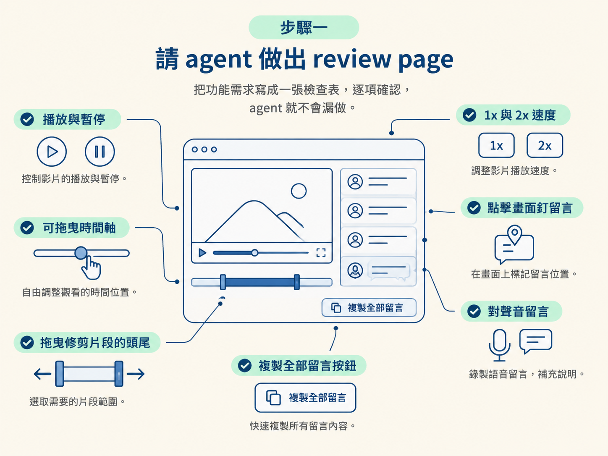
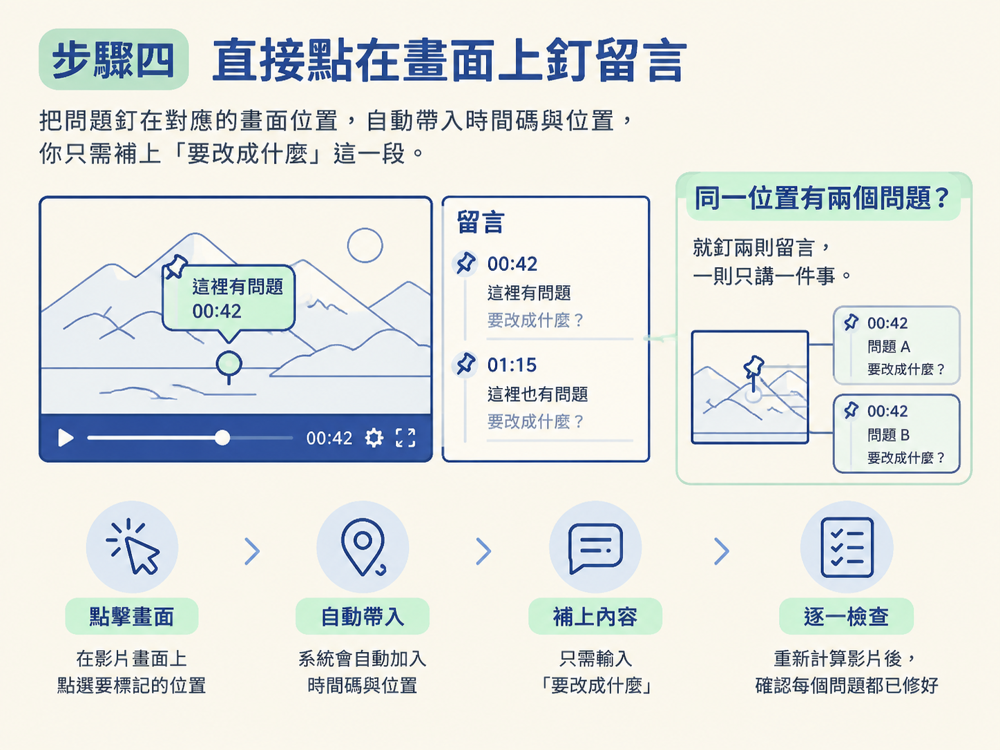
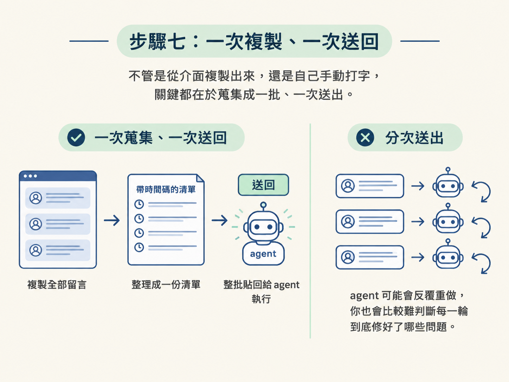

這一課的目標，是做出一頁能真正拿來看片、記問題的 review page（回饋頁）。完成後，你可以播放或暫停影片、切換 1x 與 2x 速度、拖曳時間軸、在畫面上點擊釘留言、針對聲音留言，也能直接拖曳片段的頭尾來修剪。
整支影片看完後，只要按一次「複製全部留言」，就能把所有回饋整理成一份清單，完整送回給 agent。這一步在整條流程中負責「蒐集問題」：前一個節點已經算出影片，現在要把散落各處的「這裡怪怪的」變成帶著時間碼、可以逐項處理的待改清單。
開始前只要準備兩樣東西。第一，是一支已經算好的影片，通常就是上一個節點用 HyperFrames 算出的版本。第二，是能存取這個專案的 agent，因為它要根據你的指令，為這支影片生成一頁 HTML 回饋介面。
review page 只是本機網頁，不需要另外安裝工具。做完之後，你應該能在瀏覽器看到影片、控制項、時間軸和留言區，並且可以把整批回饋複製出去。
先把影片交給 agent，再下這段指令。中括號裡換成你的影片檔名即可：
Make me a review page for [your video]. Give me
play and pause, 1x and 2x speed, and a timeline
I can scrub. When I click on the picture, pin a
comment at that time and spot. Let me comment on
the sound too, at the moment I hear it. If a cut
is in the wrong place, let me drag the clip's
start or end to fix it. Add a Copy all comments
button that copies every comment and every trim,
each with its time, as one list I can paste back
to you.這段指令的重點，不是籠統地要求「做一個好用的介面」，而是把功能一項一項列出來：播放與暫停、1x 與 2x、可拖曳的時間軸、點擊釘留言、對聲音留言、拖曳修剪點，以及「複製全部留言」按鈕。
需求寫得像一張檢查表，agent 就比較不會漏做。你不是在請它自由發揮，而是在告訴它這頁至少要有哪些工具。

頁面生成後，先不要急著開始留言。花一分鐘逐項確認，若有缺少，就先請 agent 補上。
預期看到的結果：瀏覽器中打開一頁本機網頁，頁面上有影片、一排控制項、一條時間軸和留言區。留言會依時間排序，每則留言旁邊都標著對應的秒數。
確認工具可用後，先完整看過影片一次，再開始整理回饋。實用的做法是先切到 2 倍速，快速掃過整支片，先掌握動畫節奏、畫面卡點和整體問題。
遇到可疑的地方，再切回 1x 仔細看。如果需要，也可以在 1x 和 2x 之間反覆切換：2x 用來巡片，1x 用來確認細節。
這一步先做兩件事：發現問題、蒐集問題。不要看到第一個問題就立刻送出，先把整支影片看完，才知道這一輪總共有多少地方需要處理。
看到想修改的地方，就在畫面上的對應位置點一下。review page 會釘出一則留言，並自動記下「第幾秒」以及「畫面上的哪個位置」。你只需要補上最後一段：要改成什麼。
請沿用上一課的原則：一則留言只講一件事。如果同一個位置同時有兩個問題，就釘兩則留言。這樣重新計算影片後，你可以一項一項檢查，確認每個問題是否都已經修好。

如果還沒看完整支影片，也先不要急著送出。先把所有該改的地方釘好，再一次整理回傳，agent 才能按照完整清單處理。
分鏡階段通常只處理畫面，聲音問題要到這裡才會浮現。當你聽到音效太大聲、配樂太早進來，或其他需要調整的聲音，就停在那一秒，留下針對聲音的留言。
review page 的價值，就在於它把畫面和聲音放在同一條時間軸上。你可以在正確的秒數，對正確的對象說明問題，而不是事後只寫一句「聲音不對」讓 agent 猜測。
有時候 agent 會把剪點放錯位置。例如某個片段的結尾多留了一段講錯的 take，這種問題用文字很難精確描述。你可能寫「請把第 40 秒那個片段結尾修掉」，但 agent 未必知道你指的是哪一小段。
遇到這種情況，直接拖動片段的頭或尾，把多餘的部分拉掉。這個拖曳結果會被記錄下來，之後和其他留言一起出現在複製清單中。
能直接操作，就不要繞一圈用文字描述。對剪點來說，拖曳就像拿尺在時間軸上畫出界線，通常比口頭說明更快，也更精準。
完成以下幾件事之後：
接著按下「複製全部留言」按鈕。它會把每則留言和每次修剪整理成一份清單，並為每一項附上時間。你只要把整份清單貼回給 agent，不需要一則一則傳送。
如果你沒有使用 review page，也可以手動整理。這種寫法同樣有效，只是每則留言的時間和內容都要自己記錄：
here are my notes on the animated video. fix each one, then render it again.
- 0:42 - the title covers my face, move it to the left
- 1:15 - show the AssemblyAI logo when i say AssemblyAI
- 2:30 - this graphic stays on too long, take it off when i finish the sentence
change only what i listed and keep everything else exactly as it is.不管是從介面複製出來，還是自己手動打字，關鍵都在於蒐集成一批、一次送出。如果分次送出，agent 可能會反覆重做，你也會比較難判斷每一輪到底修好了哪些問題。

理想的結果是：你已經在 review page 上從頭到尾看完影片，每則留言都帶有對應的時間與位置，剪點調整也被記錄下來。按一次複製後，你會得到一份完整清單，貼回給 agent 就能逐項執行。
到這裡，你已經把「怎麼說」準備好了。下一步要處理的是「怎麼讓 agent 只改這些、不動其他地方」，也就是補完影片時，避免原本沒問題的內容被一起改壞。
review page 是一頁本機網頁，讓你播放影片、點擊釘留言、對聲音留言、拖曳修剪點，最後按一次「複製全部留言」。實際做法是先用 prompt 請 agent 建立這頁，確認功能齊全後，再用 2 倍速看完整支影片；發現問題時，一則只記一件事，最後把整份清單一次送回去。它會把散落的「這裡怪怪的」整理成一批帶時間碼、可以逐項追蹤的待辦事項。
現在你手上有一份完整的待改清單。下一課會處理最關鍵的一步：如何讓 agent 只修改你列出的項目、其他內容維持原樣，接著確認更新並算出最終版，也就是「補完但不回歸」。